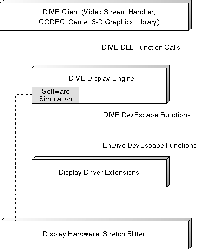

The DIVE system-level interface abstracts the low-level device driver DIVE interface to a higher level and adds software emulation for operations that digital video CODECs were previously required to do. This system-level interface is referred to as the DIVE display engine.
The DIVE display engine consists of a single, stand-alone DLL that exports the following functions:
The display engine enables subsystem components (for example, video CODECs) and applications to either directly access the video buffer or to use the display engine screen transfer functions. If direct access is used, the using component or application is responsible for writing to the frame buffer format for the current display mode and correctly clipping the output. In addition, the component is responsible for acquiring and bank switching the display apertures. If display engine screen transfer functions are used, the display engine handles clipping, pel format and color space conversions, and any necessary hardware serialization. The input formats and their corresponding color encoding specification values are:
The output formats are: